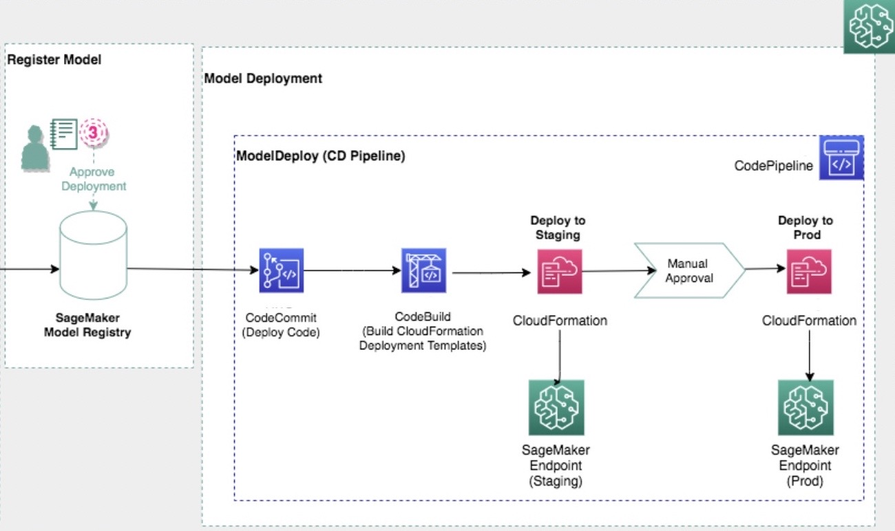

Use SageMaker-Provided Project Templates
Amazon SageMaker provides project templates that create the infrastructure you need to create an MLOps solution for continuous integration and continuous deployment (CI/CD) of ML models. Use these templates to process data, extract features, train and test models, register the models in the SageMaker model registry, and deploy the models for inference. You can customize the seed code and the configuration files to suit your requirements.
Important
As of July 25, 2022, we require additional roles to use project templates. For a complete list of required roles and instructions on how to create them, see SageMaker Studio Permissions Required to Use Projects. If you do not have the new roles, you will get the error message CodePipeline is not authorized to perform AssumeRole on role arn:aws:iam::xxx:role/service-role/AmazonSageMakerServiceCatalogProductsCodePipelineRole when you try to create a new project and cannot proceed.
SageMaker project templates offer you the following choice of code repositories, workflow automation tools, and pipeline stages:
-
Code repository: AWS CodeCommit or third-party Git repositories such as GitHub and Bitbucket
-
CI/CD workflow automation: AWS CodePipeline or Jenkins
-
Pipeline stages: Model building and training, model deployment, or both
The following discussion provides an overview of each template you can choose when you create your SageMaker project. You can also view the available templates in Studio by following Step 1: Create the Project of the Project walkthrough.
For step-by-step instructions on how to create a real project, you can follow one of the project walkthroughs:
-
If you want to use the template MLOps template for model building, training, and deployment, see SageMaker MLOps Project Walkthrough.
-
If you want to use the template MLOps template for model building, training, and deployment with third-party Git repositories using CodePipeline, see SageMaker MLOps Project Walkthrough Using Third-party Git Repos.
-
If you want to use the template MLOps template for model building, training, and deployment with third-party Git repositories using Jenkins, see Create Amazon SageMaker projects using third-party source control and Jenkins
.
Topics
- MLOps template for model building, training, and deployment
- MLOps template for model building, training, deployment, and Amazon SageMaker Model Monitor
- MLOps template for image building, model building, and model deployment
- MLOps template for model building, training, and deployment with third-party Git repositories using CodePipeline
- MLOps template for model building, training, and deployment with third-party Git repositories using Jenkins
- Model deployment for Salesforce
- Update SageMaker Projects to Use Third-Party Git Repositories
MLOps template for model building, training, and deployment
This template is a combination of the following two templates, each of which can be used independently, and contains all of the resources provided in those templates.
-
Code repository: AWS CodeCommit
-
CI/CD workflow automation: AWS CodePipeline
- MLOps template for model building and training
-
Use this template when you want an MLOps solution to process data, extract features, train and test models, and register the models in the SageMaker model registry.
This template provides the following resources:
-
An AWS CodeCommit repository that contains sample code that creates an Amazon SageMaker pipeline in Python code and shows how to create and update the SageMaker pipeline. This repository also has a sample Python notebook that you can open and run in Studio.
-
An AWS CodePipeline pipeline that has source and build steps. The source step points to the CodeCommit repository. The build step gets the code from that repository, creates and updates the SageMaker pipeline, starts a pipeline execution, and waits for the pipeline execution to complete.
-
An Amazon S3 bucket to store artifacts, including CodePipeline and CodeBuild artifacts, and any artifacts generated from the SageMaker pipeline runs.
The following diagram illustrates the workflow and AWS resources used by this template to help you build and train your models.

-
- MLOps template for model deployment
-
Use this template to automate the deployment of models in the SageMaker model registry to SageMaker endpoints for real-time inference. This template recognizes changes in the model registry. When a new model version is registered and approved, it automatically initiates a deployment.
The template provisions a CodeCommit repository with configuration files to specify the model deployment steps, AWS CloudFormation templates to define endpoints as infrastructure, and seed code for testing the endpoint.
This template provides the following resources:
-
An AWS CodeCommit repository that contains sample code that deploys models to endpoints in staging and production environments.
-
An AWS CodePipeline pipeline that has source, build, deploy-to-staging, and deploy-to-production steps. The source step points to the CodeCommit repository, and the build step gets the code from that repository and generates CloudFormation stacks to deploy. The deploy-to-staging and deploy-to-production steps deploy the CloudFormation stacks to their respective environments. There is a manual approval step between the staging and production build steps, so that a MLOps engineer must approve the model before it is deployed to production.
There is also a programmatic approval step with placeholder tests in the example code in the CodeCommit repository. You can add additional tests to replace the placeholders tests.
-
An Amazon S3 bucket to store artifacts, including CodePipeline and CodeBuild artifacts, and any artifacts generated from the SageMaker pipeline runs.
-
A CloudWatch event to initiate the pipeline when a model package version is approved or rejected.
The following diagram illustrates the workflow and AWS resources used by this template to help you deploy your models.
 -
As previously mentioned, see Project Walkthrough for a demonstration that uses this template to create a real project.
MLOps template for model building, training, deployment, and Amazon SageMaker Model Monitor
This template is an extension of the MLOps template for model building, training, and deployment. It includes both the model building, training, and deployment components of the template, and an additional Amazon SageMaker Model Monitor template that provides the following types of monitoring:
Data Quality – Monitor drift in data quality.
Model Quality – Monitor drift in model quality metrics, such as accuracy.
Bias Drift for Models in Production – Monitor bias in a model's predictions.
-
Code repository: AWS CodeCommit
-
CI/CD workflow automation: AWS CodePipeline
MLOps template for Amazon SageMaker Model Monitor
You can use this template for an MLOps solution to deploy one or more of the Amazon SageMaker data quality, model quality, model bias, and model explainability monitors to monitor a deployed model on a SageMaker inference endpoint.
This template provides the following resources:
An AWS CodeCommit repository that contains sample Python code that gets the baselines used by the monitors from the SageMaker Model Registry, and updates the template’s parameters for the staging and production environments. It also contains a AWS CloudFormation template to create the Amazon SageMaker Model Monitors.
An AWS CodePipeline pipeline that has source, build, and deploy steps. The source step points to the CodePipeline repository. The build step gets the code from that repository, gets the baseline from the Model Registry, and updates template parameters for the staging and production environments. The deploy steps deploy the configured monitors into the staging and production environments. The manual approval step, within the
DeployStagingstage, requires you to verify that the production SageMaker endpoint isInServicebefore approving and moving to theDeployProdstage.The template uses the same S3 bucket created by the MLOps template for model building, training, and deployment to store the monitors' outputs.
Two Amazon EventBridge events rules initiate the Amazon SageMaker Model Monitor AWS CodePipeline every time the staging SageMaker endpoint is updated, or a code change is committed to the CodePipeline repository.
MLOps template for image building, model building, and model deployment
This template is an extension of the MLOps template for model building, training, and deployment. It includes both the model building, training, and deployment components of that template and the following options:
Include processing image–building pipeline
Include training image–building pipeline
Include inference image–building pipeline
For each of the components selected during project creation, the following are created by using the template:
An Amazon ECR repository
A CodeCommit repository containing a Dockerfile that you can customize
A CodePipeline that is initiated by changes to the CodePipeline repository
A CodeBuild project that builds a Docker image and registers it in the Amazon ECR repository
An EventBridge rule that initiates the CodePipeline on a schedule
When the CodePipeline is initiated, it builds a new Docker container and registers it with an
Amazon ECR repository. When a new container is registered with the Amazon ECR repository, a new
ImageVersion is added to the SageMaker image. This initiates the model building
pipeline, which in turn initiates the deployment pipeline.
The newly created image is used in the model building, training, and deployment portions of the workflow where applicable.
MLOps template for model building, training, and deployment with third-party Git repositories using CodePipeline
-
Code repository: Third-party Git. Establish the AWS CodeStar connection from your AWS account to your GitHub user or organization. Add a tag with the key
sagemakerand valuetrueto this AWS CodeStar connection. -
CI/CD workflow automation: AWS CodePipeline
This template provides the following resources:
-
Associations with one or more customer-specified Git repositories.
-
An AWS CodePipeline pipeline that has source, build, deploy-to-staging, and deploy-to-production steps. The source step points to the third-party Git repository and the build step gets the code from that repository and generates CloudFormation stacks to deploy. The deploy-to-staging and deploy-to-production steps deploy the CloudFormation stacks to their respective environments. There is a manual approval step between the staging and production build steps, so that a MLOps engineer must approve the model before it is deployed to production.
-
An AWS CodeBuild project to populate the Git repositories with the seed code information. This requires an AWS CodeStar connection from your AWS account to your account on the Git repository host.
-
An Amazon S3 bucket to store artifacts, including CodePipeline and CodeBuild artifacts, and any artifacts generated from the SageMaker pipeline runs.
As previously mentioned, see Project Walkthrough Using Third-party Git Repos for a demonstration that uses this template to create a real project.
MLOps template for model building, training, and deployment with third-party Git repositories using Jenkins
-
Code repository: Third-party Git. Establish the AWS CodeStar connection from your AWS account to your GitHub user or organization. Add a tag with the key
sagemakerand valuetrueto this AWS CodeStar connection. -
CI/CD workflow automation: Jenkins
This template provides the following resources:
-
Associations with one or more customer-specified Git repositories.
-
Seed code to generate Jenkins pipelines that have source, build, deploy-to-staging, and deploy-to-production steps. The source step points to the customer-specified Git repository. The build step gets the code from that repository and generates two CloudFormation stacks. The deploy steps deploy the CloudFormation stacks to their respective environments. There is an approval step between the staging step and the production step.
-
An AWS CodeBuild project to populate the Git repositories with the seed code information. This requires an AWS CodeStar connection from your AWS account to your account on the Git repository host.
-
An Amazon S3 bucket to store artifacts of the SageMaker project and SageMaker pipeline.
The template creates the association between your project and the source control
repositories, but you need to perform additional manual steps to establish communication
between your AWS account and Jenkins. For the detailed steps, see Create Amazon SageMaker projects using third-party source control and Jenkins
The instructions help you build the architecture shown in the following diagram, with GitHub as the source control repository in this example. As shown, you are attaching your Git repository to the project to check in and manage code versions. Jenkins initiates the model build pipeline when it detects changes to the model build code in the Git repository. You are also connecting the project to Jenkins to orchestrate your model deployment steps, which start when you approve the model registered in the model registry, or when Jenkins detects changes to the model deployment code.
In summary, the steps guide you through the following tasks:
-
Establish the connection between your AWS and GitHub accounts.
-
Create the Jenkins account and import needed plugins.
-
Create the Jenkins IAM user and permissions policy.
-
Set the AWS credentials for the Jenkins IAM user on your Jenkins server.
-
Create an API token for communication with your Jenkins server.
-
Use a CloudFormation template to set up an EventBridge rule to monitor the model registry for newly-approved models.
-
Create the SageMaker project, which seeds your GitHub repositories with model build and deploy code.
-
Create your Jenkins model build pipeline with the model build seed code.
-
Create your Jenkins model deploy pipeline with the model deploy seed code.
Model deployment for Salesforce
-
Code repository: AWS CodeCommit
-
CI/CD workflow automation: AWS CodePipeline
This template provides the following resources:
-
An AWS CodeCommit repository that contains sample code that creates an Amazon SageMaker pipeline in Python code and shows how to create and update the pipeline. This repository also has a Python Jupyter Notebook that you can open and run in Studio.
-
An AWS CodePipeline pipeline that has source and build steps. The source step points to the CodeCommit repository. The build step gets the code from the repository, creates and updates the SageMaker pipeline, starts a pipeline run, and waits for the pipeline run to complete.
-
An Amazon S3 bucket to store artifacts, including CodePipeline and CodeBuild artifacts, and any artifacts generated from the SageMaker pipeline runs.
Your admin may need to perform additional setup to enable data access from Salesforce
Data Cloud to SageMaker Studio to build AI/ML models. See the solution overview in the blog post Use the Amazon SageMaker and Salesforce Data Cloud integration to power your Salesforce apps with AI/ML
The following diagram illustrates the high-level workflow used by this template to help you build and train your models. After you set up a connection between the Salesforce Data Cloud to Data Wrangler and preprocess your data, use the Model deployment for Salesforce project template to automate model training and deployment. The template provides customizable model deploy code and a sample notebook from AWS CodePipeline to train your model and register it into the SageMaker model registry. Once you approve the model, the endpoint is exposed to Salesforce as an API through API Gateway, and customers can start making predictions with the deployed model from within Salesforce.
Note
This template permits Transport Layer Security (TLS) policy versions 1.0 and 1.1 for API Gateway setup. You can make this configuration more secure with custom domain names. For details, see Setting up custom domain names for REST APIs.
The blog post Use the Amazon SageMaker and Salesforce Data Cloud integration to power your Salesforce apps with
AI/ML
Select the project template Model deployment for Salesforce, and provide the secret manager name.
Clone the repository to use the customizable SageMaker-provided sample notebook and model deploy code.
Preprocess your data with Data Wrangler.
Create a connection to the Salesforce Data Cloud and import data into Data Wrangler.
Use Data Wrangler to prepare the data with some example transformations.
Initiate a processing job to process the data using your Data Wrangler configuration.
Train the model.
Register your model in the model registry.
Approve your model in model registry.
View your endpoint in the SageMaker console.
Invoke the API URL from Salesforce Einstein Studio to register and use the model inferences in Einstein Studio.
The following diagram shows in greater detail the workflow and AWS resources used by the SageMaker project template with Salesforce Data Cloud Integration.
Update SageMaker Projects to Use Third-Party Git Repositories
The managed policy attached to the
AmazonSageMakerServiceCatalogProductsUseRole role was updated on July 27,
2021 for use with the third-party Git templates. Users who onboard to Amazon SageMaker Studio after
this date and enable project templates use the new policy. Users who onboarded prior to this
date must update the policy to use these templates. Use one of the following options to
update the policy:
-
Delete role and toggle Studio settings
-
In the IAM console, delete
AmazonSageMakerServiceCatalogProductsUseRole. -
In the Studio control panel, choose Edit Settings.
-
Toggle both settings and then choose Submit.
-
-
In the IAM console, add the following permissions to
AmazonSageMakerServiceCatalogProductsUseRole:{ "Effect": "Allow", "Action": [ "codestar-connections:UseConnection" ], "Resource": "arn:aws:codestar-connections:*:*:connection/*", "Condition": { "StringEqualsIgnoreCase": { "aws:ResourceTag/sagemaker": "true" } } }, { "Effect": "Allow", "Action": [ "s3:PutObjectAcl" ], "Resource": [ "arn:aws:s3:::sagemaker-*" ] }